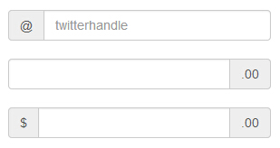
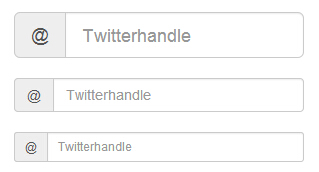
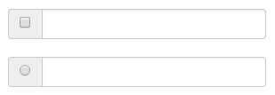
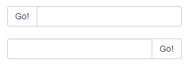
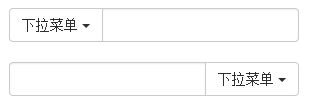
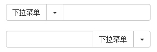

Bootstrap 输入框组
本章将讲解 Bootstrap 支持的另一个特性，输入框组。输入框组扩展自 表单控件。使用输入框组，您可以很容易地向基于文本的输入框添加作为前缀和后缀的文本或按钮。
通过向输入域添加前缀和后缀的内容，您可以向用户输入添加公共的元素。例如，您可以添加美元符号，或者在 Twitter 用户名前添加 @，或者应用程序接口所需要的其他公共的元素。
向 .form-control 添加前缀或后缀元素的步骤如下：
- 把前缀或后缀元素放在一个带有 class .input-group 的 <div> 中。
- 接着，在相同的 <div> 内，在 class 为 .input-group-addon 的 <span> 内放置额外的内容。
- 把该 <span> 放置在 <input> 元素的前面或者后面。
为了保持跨浏览器的兼容性，请避免使用 <select> 元素，因为它们在 WebKit 浏览器中不能完全渲染出效果。也不要直接向表单组应用输入框组的 class，输入框组是一个孤立的组件。
基本的输入框组
下面的实例演示了基本的输入框组：
<!DOCTYPE html> <html> <head> <title>Bootstrap 实例 - 基本的输入框组</title> <link href="/bootstrap/css/bootstrap.min.css" rel="stylesheet"> <script src="/scripts/jquery.min.js"></script> <script src="/bootstrap/js/bootstrap.min.js"></script> </head> <body> <div style="padding: 100px 100px 10px;"> <form class="bs-example bs-example-form" role="form"> <div class="input-group"> <span class="input-group-addon">@</span> <input type="text" class="form-control" placeholder="twitterhandle"> </div> <br> <div class="input-group"> <input type="text" class="form-control"> <span class="input-group-addon">.00</span> </div> <br> <div class="input-group"> <span class="input-group-addon">$</span> <input type="text" class="form-control"> <span class="input-group-addon">.00</span> </div> </form> </div> </body> </html>
结果如下所示：

输入框组的大小
您可以通过向 .input-group 添加相对表单大小的 class（比如 .input-group-lg、input-group-sm、input-group-xs）来改变输入框组的大小。输入框中的内容会自动调整大小。
下面的实例演示了这点：
<!DOCTYPE html> <html> <head> <title>Bootstrap 实例 - 输入框组的大小</title> <link href="/bootstrap/css/bootstrap.min.css" rel="stylesheet"> <script src="/scripts/jquery.min.js"></script> <script src="/bootstrap/js/bootstrap.min.js"></script> </head> <body> <div style="padding: 100px 100px 10px;"> <form class="bs-example bs-example-form" role="form"> <div class="input-group input-group-lg"> <span class="input-group-addon">@</span> <input type="text" class="form-control" placeholder="Twitterhandle"> </div><br> <div class="input-group"> <span class="input-group-addon">@</span> <input type="text" class="form-control" placeholder="Twitterhandle"> </div><br> <div class="input-group input-group-sm"> <span class="input-group-addon">@</span> <input type="text" class="form-control" placeholder="Twitterhandle"> </div> </form> </div> </body> </html>
结果如下所示：

复选框和单选插件
您可以把复选框和单选插件作为输入框组的前缀或者后缀元素，如下面的实例所示：
<!DOCTYPE html> <html> <head> <title>Bootstrap 实例 - 输入框组的复选框和单选插件</title> <link href="/bootstrap/css/bootstrap.min.css" rel="stylesheet"> <script src="/scripts/jquery.min.js"></script> <script src="/bootstrap/js/bootstrap.min.js"></script> </head> <body> <div style="padding: 100px 100px 10px;"> <form class="bs-example bs-example-form" role="form"> <div class="row"> <div class="col-lg-6"> <div class="input-group"> <span class="input-group-addon"> <input type="checkbox"> </span> <input type="text" class="form-control"> </div><!-- /input-group --> </div><!-- /.col-lg-6 --><br> <div class="col-lg-6"> <div class="input-group"> <span class="input-group-addon"> <input type="radio"> </span> <input type="text" class="form-control"> </div><!-- /input-group --> </div><!-- /.col-lg-6 --> </div><!-- /.row --> </form> </div> </body> </html>
结果如下所示：

按钮插件
您也可以把按钮作为输入框组的前缀或者后缀元素，这个时候您就不是添加 .input-group-addon class，您需要使用 class .input-group-btn 来包裹按钮。这是必需的，因为默认的浏览器样式不会被重写。下面的实例演示了这点：
<!DOCTYPE html> <html> <head> <title>Bootstrap 实例 - 输入框组的按钮插件</title> <link href="/bootstrap/css/bootstrap.min.css" rel="stylesheet"> <script src="/scripts/jquery.min.js"></script> <script src="/bootstrap/js/bootstrap.min.js"></script> </head> <body> <div style="padding: 100px 100px 10px;"> <form class="bs-example bs-example-form" role="form"> <div class="row"> <div class="col-lg-6"> <div class="input-group"> <span class="input-group-btn"> <button class="btn btn-default" type="button"> Go! </button> </span> <input type="text" class="form-control"> </div><!-- /input-group --> </div><!-- /.col-lg-6 --><br> <div class="col-lg-6"> <div class="input-group"> <input type="text" class="form-control"> <span class="input-group-btn"> <button class="btn btn-default" type="button"> Go! </button> </span> </div><!-- /input-group --> </div><!-- /.col-lg-6 --> </div><!-- /.row --> </form> </div> </body> </html>
结果如下所示：

带有下拉菜单的按钮
在输入框组中添加带有下拉菜单的按钮，只需要简单地在一个 .input-group-btn class 中包裹按钮和下拉菜单即可，如下面的实例所示：
<!DOCTYPE html> <html> <head> <title>Bootstrap 实例 - 输入框组的下拉菜单按钮</title> <link href="/bootstrap/css/bootstrap.min.css" rel="stylesheet"> <script src="/scripts/jquery.min.js"></script> <script src="/bootstrap/js/bootstrap.min.js"></script> </head> <body> <div style="padding: 100px 100px 10px;"> <form class="bs-example bs-example-form" role="form"> <div class="row"> <div class="col-lg-6"> <div class="input-group"> <div class="input-group-btn"> <button type="button" class="btn btn-default dropdown-toggle" data-toggle="dropdown"> 下拉菜单 <span class="caret"></span> </button> <ul class="dropdown-menu"> <li><a href="#">功能</a></li> <li><a href="#">另一个功能</a></li> <li><a href="#">其他</a></li> <li class="divider"></li> <li><a href="#">分离的链接</a></li> </ul> </div><!-- /btn-group --> <input type="text" class="form-control"> </div><!-- /input-group --> </div><!-- /.col-lg-6 --><br> <div class="col-lg-6"> <div class="input-group"> <input type="text" class="form-control"> <div class="input-group-btn"> <button type="button" class="btn btn-default dropdown-toggle" data-toggle="dropdown"> 下拉菜单 <span class="caret"></span> </button> <ul class="dropdown-menu pull-right"> <li><a href="#">功能</a></li> <li><a href="#">另一个功能</a></li> <li><a href="#">其他</a></li> <li class="divider"></li> <li><a href="#">分离的链接</a></li> </ul> </div><!-- /btn-group --> </div><!-- /input-group --> </div><!-- /.col-lg-6 --> </div><!-- /.row --> </form> </div> </body> </html>
结果如下所示：

分割的下拉菜单按钮
在输入框组中添加带有下拉菜单的分割按钮，使用与下拉菜单按钮大致相同的样式，但是对下拉菜单添加了主要的功能，如下面的实例所示：
<!DOCTYPE html> <html> <head> <title>Bootstrap 实例 - 输入框组中分割的下拉菜单按钮</title> <link href="/bootstrap/css/bootstrap.min.css" rel="stylesheet"> <script src="/scripts/jquery.min.js"></script> <script src="/bootstrap/js/bootstrap.min.js"></script> </head> <body> <div style="padding: 100px 100px 10px;"> <form class="bs-example bs-example-form" role="form"> <div class="row"> <div class="col-lg-6"> <div class="input-group"> <div class="input-group-btn"> <button type="button" class="btn btn-default" tabindex="-1">下拉菜单 </button> <button type="button" class="btn btn-default dropdown-toggle" data-toggle="dropdown" tabindex="-1"> <span class="caret"></span> <span class="sr-only">切换下拉菜单</span> </button> <ul class="dropdown-menu"> <li><a href="#">功能</a></li> <li><a href="#">另一个功能</a></li> <li><a href="#">其他</a></li> <li class="divider"></li> <li><a href="#">分离的链接</a></li> </ul> </div><!-- /btn-group --> <input type="text" class="form-control"> </div><!-- /input-group --> </div><!-- /.col-lg-6 --><br> <div class="col-lg-6"> <div class="input-group"> <input type="text" class="form-control"> <div class="input-group-btn"> <button type="button" class="btn btn-default" tabindex="-1">下拉菜单 </button> <button type="button" class="btn btn-default dropdown-toggle" data-toggle="dropdown" tabindex="-1"> <span class="caret"></span> <span class="sr-only">切换下拉菜单</span> </button> <ul class="dropdown-menu pull-right"> <li><a href="#">功能</a></li> <li><a href="#">另一个功能</a></li> <li><a href="#">其他</a></li> <li class="divider"></li> <li><a href="#">分离的链接</a></li> </ul> </div><!-- /btn-group --> </div><!-- /input-group --> </div><!-- /.col-lg-6 --> </div><!-- /.row --> </form> </div> </body> </html>
结果如下所示：
